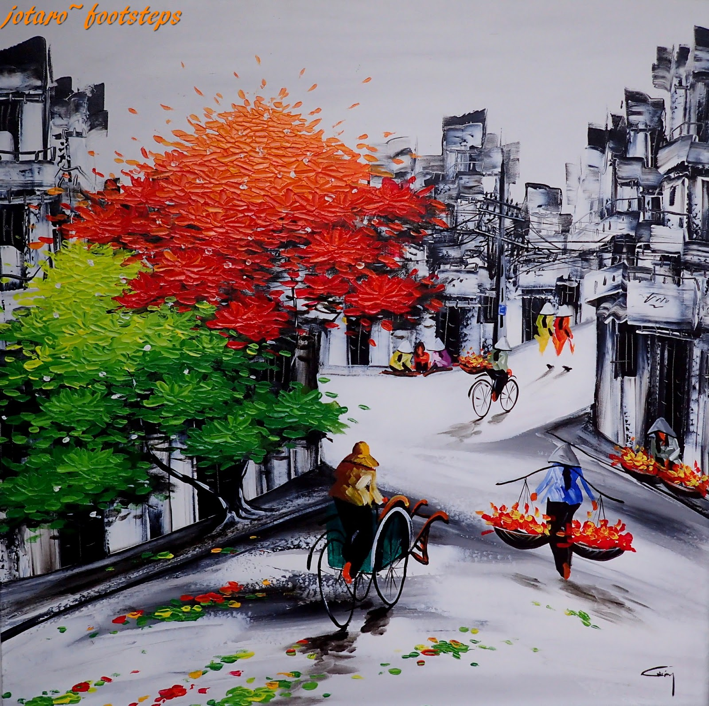

The Sacred Soil of Central Vietnam

In the heart of Vietnam, nestled between the Truong Son mountains and the Eastern Sea, lies the historical province of Quảng Nam. It is a land characterized by sun-baked rice fields, tempestuous coastal weather, and resilient, deeply hospitable people.
Unlike the clear, delicate broths of Hanoi’s Phở in the north or the sweet, bountiful noodle soups of the Mekong Delta in the south, Mì Quảng was born of rustic necessity and boundless culinary ingenuity. It was designed to nourish hard-working farmers and travelers along the historic trade ports of Hội An.
Mì Quảng is fundamentally distinct: it is not a soup, nor is it a dry salad. It is an intricate architectural harmony anchored by a shallow, intensely concentrated braised reduction called nước nhưn, enveloping fresh, hand-cut turmeric rice noodles and topped with a lavish garden of crisp wild herbs.